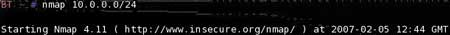
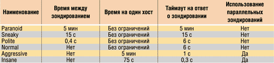

Сетевой сканер Nmap как средство аудита локальной сети
Сергей Пахомов
Сетевой сканер Nmap и его возможности
Результаты сканирования и их анализ
Методы сканирования на предмет наличия компьютера в сети
Обнаружение компьютера методом Ping
Обнаружение с помощью SYN/ACK- и UDP-пакетов
Обнаружение компьютера посредством различных ICMP-пакетов
Отключение обнаружения компьютера при сканировании
Методы сканирования портов удаленного компьютера
Сканирование с использованием системной функции connect()
Сканирование портов UDP-протокола
Сканирование с помощью методов FIN, Xmas и Null
Сканирование с использованием различных флагов
Сканирование с помощью методов ACK и Window
Скрытое сканирование с использованием алгоритма idlescan
Сканирование на наличие открытых протоколов
Скрытное сканирование посредством метода ftp bounce
Определение версий запущенных служб
Определение версии ОС на удаленном компьютере
Сисадмин мнил себя богом сети,
но электрик грубо развеял этот миф.
ИТ-юмор
Сетевое сканирование — один из первых шагов в процессе взлома или его предупреждения, так как оно позволяет определить наиболее уязвимые и потенциально опасные открытые порты компьютера. Поскольку каждый компьютер обладает набором определенных особенностей, с помощью сканера портов можно определить, какие службы (FTP-, web-, почтовый сервер и т.п.) запущены на компьютере, а также какая операционная система управляет им. Чем больше служб запущено на компьютере, тем выше вероятность его взлома — ведь каждое программное обеспечение имеет уязвимые места.
Сетевые сканеры предназначены для сканирования определенного сетевого адреса (IP-адреса) или адресов и выявления открытых и, возможно, небезопасных портов на исследуемом компьютере. Тем не менее такие программы применяются, как правило, хакерами для определения возможных уязвимостей и последующего взлома компьютера, а отнюдь не с целью обеспечения его безопасности. Получается, что безопасность и взлом хоть и антиподы по своей сути, но допускают использование одних и тех же средств.
Чтобы понять, каким образом происходит сканирование, необходимо разобраться в том, по какому алгоритму осуществляется TCP-соединение между компьютерами. Чтобы установить TCP-соединение между клиентом и сервером, клиент посылает запрос (TCP-пакет) с установленным флагом SYN для инициализации соединения. В случае если сервер прослушивает этот порт, он посылает пакет клиенту с установленными флагами SYN и ACK, тем самым одновременно подтверждая запрос клиента и запрашивая его об установлении обратного соединения. Затем клиент посылает пакет с установленным флагом ACK, подтверждая запрос SYN-сервера. Далее происходит передача данных, для подтверждения получения которых каждый раз отправляется пакет с флагом ACK. Когда сервер или клиент полностью закончит передачу данных, он посылает пакет с установленным флагом FIN, тем самым сообщая другой стороне о необходимости завершить соединение. Другая сторона, получив пакет с флагом FIN, посылает обратный пакет с установленным флагом FIN, подтверждая окончание соединения. Для того чтобы прервать соединение, любая из сторон может послать пакет с флагом RST. Более наглядно процесс обмена пакетами показан в табл. 1.
Таблица 1. Процесс установления соединения и обмена пакетами
Большинство сканеров получают информацию о доступных открытых портах и присутствии компьютера в сети исходя именно из этой последовательности.
Сетевой сканер Nmap и его возможности
Поскольку системы на базе ОС Linux и BSD приобретают в последнее время все большую популярность, в этой публикации мы рассмотрим наиболее продвинутый сетевой сканер для операционных систем Linux — Nmap. Эта программа является одной из наиболее распространенных в среде пользователей Linux и отличается мощным инструментарием и высокой скоростью работы.
Сетевой сканер Nmap появился в 1997 году для операционных систем на базе UNIX и продолжает совершенствоваться по сей день. От подобных программ для ОС на базе Windows он отличается мощным встроенным инструментарием, высокой скоростью работы, различными сопутствующими утилитами, разнообразными методами сканирования и популярность, поскольку практически любой дистрибутив Linux оснащен этим сканером сетевой безопасности. Однако, как и большинство узкоспециализированных программ для Linux, он не имеет доступной конечному пользователю оболочки и запускается из командной строки. Конечно, существуют дополнительные интерфейсы для управления этой утилитой, например такие, как Umit, Nmapfe, которые используют движок Nmap и выводят информацию в оконном режиме, а не в командной строке. Но все-таки эта утилита изначально разрабатывалась для работы в командной строке, а «навесные» утилиты увеличивают время работы и имеют массу недостатков по сравнению с оригиналом, в том числе и в стиле оформления. Кроме того, существует версия этой программы и для операционных систем на базе Windows. Так как методы работы и многие команды для обеих платформ идентичны, в данной статье будет рассмотрена версия Nmap 4.1 для Linux-систем. Поскольку Nmap входит практически в каждый дистрибутив Linux, для того чтобы просканировать сеть, не переставляя операционную систему, можно воспользоваться так называемыми LiveCD. Загрузочные диски такого типа не требуют установки и загружаются с CD/DVD-привода, при этом не нужно разбивать жесткий диск и создавать дополнительные разделы — жестким диском в этом случае служит часть оперативной памяти компьютера.
В настоящее время сетевые сканеры позволяют определять множество дополнительных параметров сканируемого компьютера. Nmap может определять большинство основных параметров сетевого адаптера: MAC-адрес, имя компьютера в домене, открытые порты, порты, закрытые брандмауэром, компанию — производителя чипсета сетевого адаптера исследуемого компьютера, версии ОС и служб. Отметим, что данные о MAC-адресах и о производителе чипсета можно получить только для компьютеров, которые находятся в той же подсети, что и сканирующий ПК. Чтобы оценить все достоинства этой программы, рассмотрим наиболее часто используемые при ее работе ключи.
Как уже говорилось, запуск Nmap производится из командной строки. При запуске программы без каких-либо ключей или с ключом Nmap -h (--help) либо без него на экран будет выведен список доступных ключей и задаваемых параметров (рис. 1).
Рис. 1. Список ключей при вводе команды Nmap
Синтаксис запуска программы следующий: Nmap [Scan type(s)] [options] {target specification}, где вместо Scan type указывается тип сканирования (по умолчанию, если это место оставить пустым, Nmap будет открыто сканировать доступные порты). В качестве options вводятся всевозможные ключи и параметры сканирования, а вместо target specification — либо IP-адрес компьютера, либо диапазон IP-адресов (который определяется маской подсети), либо название хоста.
Скорее всего, пользователям, которые имели дело с настройками сетевых адаптеров, приходилось сталкиваться с таким параметром, как маска подсети (Netmask). Однако далеко не все представляют себе, что это такое.
Как известно, IP-адрес состоит из четырех целочисленных значений (октет) и представляется в форме xxx.xxx.xxx.xxx, где xxx может принимать значения от 0 до 254. Но IP-адрес сам по себе не достаточен, и для того, чтобы сетевое устройство определило, к какой именно подсети принадлежит компьютер, необходима также маска подсети, чтобы показать, какая часть IP-адреса является идентификатором сети (Network ID), а какая — идентификатором хоста (Host ID). Идентификатор сети (Network ID) по существу — это адрес самой сети, а идентификатор хоста (Host ID) — адрес самого узла в сети. Рассмотрим узел с IP-адресом 10.242.10.242 и маской подсети 255.0.0.0 — в этом случае компьютер принадлежит к сети 10.0.0.0. Здесь идентификатором сети служит 10.0.0.0, а идентификатором хоста — 242.10.242. Чтобы получить адрес сети, зная IP-адрес и маску подсети, необходимо применить к ним операцию поразрядной конъюнкции. Результат получается побитным с AND между IP-адресом и маской подсети:
1 AND 1=1
1 AND 0=0
0 AND 1=0
0 AND 0=0
Например, в случае более сложной маски:
IP-адрес: 00001100 00100010 00111000 1001110 (12.34.56.78)
Маска подсети: 11111111 11111111 11100000 0000000 (255.255.224.0)
Адрес сети: 00001100 00100010 00100000 0000000 (12.34.32.0)
Однако для того, чтобы осуществлять сканирование сети и при этом писать меньше текста, можно использовать альтернативный ввод маски подсети с использованием префиксов. В большинстве случаев для простых сетей можно ограничиться простыми масками подсети, такими как 255.0.0.0, 255.255.0.0 и 255.255.255.0. Маску подсети часто записывают вместе с IP-адресом в формате «IP-адрес/количество единичных бит в маске». Например, IP-адрес 12.34.56.78 с маской 255.255.224.0 (то есть состоящей из 19 единичных и 13 нулевых бит) можно записать как 12.34.56.78/19. Для трех рассмотренных типов существует альтернативный ввод вида ip/8, ip/16 и ip/24, позволяющий сократить количество набираемых цифр при вводе в командной строке. Для приведенного выше примера маска подсети может быть записана таким образом: 10.242.10.242/8, что значительно короче, чем 10.242.10.242 маска 255.0.0.0. Поэтому диапазон IP-адресов для сети 10.0.0.0 можно записать в виде 10.0.0.0/8.
Вернемся к сетевому сканеру Nmap. Как уже говорилось, в качестве {target specification} можно указывать IP-адрес, диапазон адресов и имя хоста. Если требуется сканировать множество различных IP-адресов и хостов, вписывать все вручную в командную строку не очень удобно (особенно если количество адресов превышает 20) — для этого Nmap поддерживает загрузку файла с адресами. В табл. 2 перечислены возможные ключи, связанные с вводом сканируемых адресов.
Таблица 2. Ключи, отвечающие за ввод адресов
Стоит отметить, что файл, содержащий список адресов, должен быть оформлен в текстовом виде. Новый адрес или диапазон адресов должен начинаться с новой строки. Примеры ввода сканируемых адресов показаны на рис. 2 и 3.

Рис. 2. Использование ввода адресов из командной строки
Зная, каким образом можно задать адреса исследуемых компьютеров, посмотрим, что же выводится в конечном счете на экран. Набираем команду Nmap 10.0.0.62 10.0.0.53, чтобы просканировать открытые порты компьютеров с этими адресами.
Рис. 3. Задание сканируемых адресов из файла
Результаты сканирования и их анализ
На рис. 4 показан вывод результатов сканирования. Сначала с помощью сервера DNS Nmap пытается определить соответствие имени сканируемому IP-адресу. Если операция прошла успешно, то в самом начале Nmap указывает реальное имя компьютера. Как видно из рисунка, IP-адресу 10.0.0.62 соответствует имя pakhomov.computerpresspublishing.ru. А для следующего исследуемого адреса — 10.0.0.53 — такого соответствия нет. Далее Nmap отображает информацию о закрытых или заблокированных портах (Not shown 1674 closed ports), а затем выводит (в три колонки) порты, имеющие другой статус. Первая колонка обозначает текущий номер порта, вторая может принимать различные значения, которые будут свидетельствовать об определенном Nmap статусе порта:
Рис. 4. Результат сканирования
Если порту присвоен статус unfiltered, это предполагает, что Nmap не смог точно определить, открыт порт или закрыт, обычно такое значение присваивается при сканировании методом ACK (о нем будет написано далее). Также существуют два допустимых значения: open|filtered и closed|filtered — в обоих случаях Nmap не смог определить статус порта. Чтобы более точно определить значение для первого случая, необходимо использовать сканирование методом FIN, Null, Xmas или UDP. Скорее всего, эти методы сканирования позволят получить более детальную информацию. Что касается значения closed|filtered, то оно появляется лишь в случае применения метода сканирования Idlescan.
Последняя колонка дает небольшую информацию о предполагаемом сервисе, использующем этот порт. Допустим, если открыт порт с номером 80, Nmap информирует, что этот порт обычно применяется web-серверами (http). Следует отметить, что для большей безопасности некоторые службы запускаются не на своем стандартном порте, а на другом, поэтому утверждать, что на 80-м порте запущен web-сервер, нельзя (для более точного определения запущенного сервиса предназначен метод сканирования версий). После вывода списка открытых портов Nmap отображает физический (MAC) адрес сетевого устройства, а также, если это возможно, определяет производителя чипсета сетевого адаптера исследуемого ПК и, в некоторых случаях, даже его наименование.
Методы сканирования на предмет наличия компьютера в сети
Рассмотренные выше примеры довольно простые и не требуют ввода дополнительных ключей, но обычно подходят для большинства компьютеров в сети. Однако для агрессивного сканирования с целью получения максимально возможной информации об исследуемом компьютере необходимо правильно задать параметры сканирования. Для того чтобы определить, какие компьютеры работают в сети, Nmap позволяет использовать несколько методов сканирования сети — все они относятся к разделу Host Discovery (обнаружение хостов (компьютеров)).
Обнаружение компьютера методом Ping
Самым простым является метод обнаружения работающих компьютеров с помощью Ping. Для этого в командной строке необходимо использовать ключ -sP. Сетевой сканер Nmap посылает ICMP эхо-запросы заданному IP-адресу или адресам и ждет ответа. Если ответ получен, значит, сканируемый компьютер работает, что и отображается в качестве результата сканирования. На рис. 5 показан результат использования этого метода.
Рис. 5. Результат сканирования с использованием -sP
Однако сегодня многие компьютеры, имеющие хоть какой-нибудь брандмауэр, обычно блокируют ICMP-запросы, поэтому, даже если компьютер включен, Nmap сообщит, что компьютера в сети не существует. В этом случае Nmap предусматривает применение другого метода определения наличия компьютера в сети. Рассмотренный пример с Ping-сканированием основывается на приведенной таблице последовательности установления соединения.
Обнаружение с помощью SYN/ACK- и UDP-пакетов
Если какой-либо сервис прослушивает порт, а Nmap пытается установить соединение с ним (отсылает пакет с флагом SYN), в ответ сервис может послать пакет с флагами SYN/ACK, что покажет: компьютер в сети существует. Но при отсутствии сервиса по этому порту сервер посылает в ответ пакет с флагом RST, что также указывает, что по заданному IP-адресу компьютер есть. Если в ответ на посланный пакет SYN от сервера ничего не пришло — это значит, что либо компьютер выключен, либо трафик блокируется брандмауэром. Чтобы обойти блокирование брандмауэром, разработан еще один метод сканирования. Сканер Nmap обычно посылает пакеты с флагами SYN/ACK и пакет UDP по стандартному 80-му порту, который чаще всего используется для web-трафика и поэтому очень редко блокируется брандмауэром. С помощью ключей -PS, -PA и -PU можно задавать, какой пакет будет отправлен серверу и по какому порту. Пример этих команд приведен на рис. 6. Кстати, название порта пишется слитно с указанием типа пакета: -PS80,81.
Рис. 6. Результат сканирования с применением -PA, -PS и -PU
Обнаружение компьютера посредством различных ICMP-пакетов
Приведенный выше метод не позволяет точно установить наличие компьютера в сети. Сетевой сканер Nmap имеет еще одну возможность определения наличия компьютера в сети. Для того чтобы воспользоваться этой функцией, необходимо указать дополнительные ключи -PE, -PP или -PM. Первый метод использует запросы ICMP echo, однако, как уже упоминалось, ICMP-трафик часто блокируется, поэтому данный метод не всегда применим, но, следуя спецификации ICMP, существуют также запросы даты/времени (timestamp requests) и адреса маски сети (address mask requests). С помощью этих методов тоже можно получить ответ от удаленного компьютера, однако зачастую они не дают должного результата. Для применения метода ICMP echo необходимо указать ключ -PE, для двух других описанных методов — ключи -PP и -PM соответственно. На рис. 7 показаны попытки сканирования тремя методами.
Рис. 7. Результат сканирования с использованием ключей -PE, -PP и -PM
Отключение обнаружения компьютера при сканировании
Как правило, точно установить наличие компьютера в сети невозможно, либо, если он есть, его сканирование может быть заблокировано брандмауэром. В связи с этим была введена опция -P0, при которой исследуемый компьютер не сканируется на присутствие в сети (то есть не пингуется вообще), а сканируются только порты компьютера. При использовании этой опции Nmap заведомо предполагает, что сканируемые IP-адреса находятся в сети, и не посылает запросы на определение присутствия компьютера в сети, что значительно увеличивает скорость сканирования. Эта опция обычно применяется для скрытного сканирования методами, которые будут описаны далее, поскольку в этом случае на исследуемом компьютере не остается информации о ICMP эхо-запросах.
По умолчанию при сканировании IP-адреса Nmap получает информацию об имени компьютера из системного DNS. Чтобы увеличить скорость сканирования, можно отключить эту опцию, для чего необходимо добавить ключ -n. Кстати, практически во всех программах и сервисах, так или иначе связанных с сетевым окружением, ключ -n используется именно в этом значении (netstat -n, route -n и т.п.). Существует также несколько опций, которые позволяют получить имя компьютера с помощью не только системного DNS, но и внешних серверов DNS. Для активирования этой опции необходимо запустить Nmap с ключом --dns-servers <serv1, serv2,…>, где serv1 и serv2 — адреса DNS-серверов. Кроме того, можно воспользоваться ключом -R. Как уже упоминалось, по умолчанию для получения имени компьютера Nmap применяет системный DNS. Для указания этой опции вручную необходимо ввести ключ --system-dns. На рис. 8 приведены примеры использования ключей -n и -R --dns-servers.
Рис. 8. Использование ключей -n и -R --dns-servers
Методы сканирования портов удаленного компьютера
Сетевой сканер Nmap предполагает применение разнообразных методов сканирования и получения необходимой информации. Однако оговоримся, что очень многие методы задействуют различные манипуляции с флагами TCP-пакетов на низком уровне, а потому для работы требуют полномочий root (суперпользователя) в системе. Используемые методы могут функционировать только отдельно друг от друга, лишь сканирование UDP-портов может осуществляться одновременно с другими методами сканирования. Сканирование портов основывается на все том же методе отправки пакетов с измененными флагами при инициации TCP- и UDP-соединений.
Наиболее распространенный метод, который используется по умолчанию, — это сканирование TCP SYN. Для большинства исследуемых компьютеров этого метода вполне достаточно, чтобы определить открытые порты. TCP SYN-сканирование наиболее быстрое по сравнению с другими методами — оно позволяет сканировать несколько сот портов в секунду, сохраняя при этом сканирующий компьютер в тени, поскольку никогда не завершает TCP-соединение (большинство утилит мониторинга не регистрируют данные соединения). Для использования этого метода необходимы права суперпользователя (root). Сканер Nmap отправляет исследуемому компьютеру пакет с флагом SYN, как будто он хочет открыть обычное TCP-соединение, следуя приведенным в начале статьи правилам. Если ответ (пакет с флагами SYN/ACK) от запрашиваемого хоста получен, порт будет обозначен как открытый, а при получении пакета с флагом RST — как закрытый. В случае если сканируемый компьютер не ответил, предполагается, что этот порт фильтруется брандмауэром. Чтобы использовать данный метод сканирования, необходимо запустить Nmap с ключом -sS (рис. 9).
Рис. 9. Сканирование с применением ключа -sS (сканирование TCP SYN)
Как видно из рисунка, большинство портов открыты, но некоторые закрыты брандмауэром.
Сканирование с использованием системной функции connect()
Бывают ситуации, когда полномочия суперпользователя отсутствуют, а просканировать удаленный компьютер необходимо. В этом случае Nmap использует метод, основанный на установлении соединения с помощью системной функции connect(), которую применяет большинство приложений — p2p-клиенты, браузеры и сетевые приложения. При этом Nmap посылает запрос самой операционной системе, которая и устанавливает TCP-соединение. Если соединение установлено, то порт помечается как открытый, а если нет — как закрытый. После определения статуса порта Nmap прерывает соединение, то есть с помощью функции connect() посылается пакет с флагом RST. Однако такой метод имеет один недостаток: поскольку соединение устанавливается полностью, оно остается в логах и журналах сканируемой системы, а потому системы по мониторингу практически всегда определят, какой компьютер произвел сканирование. В связи с этим данный метод применяется редко. Чтобы запустить вышеописанное сканирование, необходимо запустить Nmap с ключом -sT. Пример использование метода сканирования с помощью системной функции connect() приведен на рис. 10.
Рис. 10. Сканирование с использованием ключа -sT (сканирование TCP connect())
Сканирование портов UDP-протокола
Не стоит забывать и о UDP-сервисах, которые распространены почти так же, как сервисы, применяющие TCP-протокол. Наиболее распространенные сервисы, использующие UDP-протокол, — это DNS, SNMP и DHCP. Поскольку сканирование протокола UDP более сложное и медленное по сравнению с TCP-сканированием, многие защитные системы пренебрегают им и игнорируют прослушивание (фильтрацию) этих портов. Но в таком случае сервисы, прослушивающие данные порты, тоже могут быть уязвимы для взлома, так как Nmap позволяет определить, какие порты открыты и что за сервисы их прослушивают. Поскольку UDP-протокол не похож на TCP, метод сканирования отличается от рассмотренных ранее. Nmap посылает UDP-пакет с пустым заголовком по всем исследуемым портам и ждет ответа. Если в ответ он получает ICMP-пакет с ошибкой unreachable error, порт считается закрытым. При получении пакетов с другими ошибками Nmap считает, что порт фильтруется брандмауэром. Полученный ответный UDP-пакет свидетельствует о наличии сервиса, и порт маркируется открытым. Если ответ не получен после нескольких попыток, Nmap помечает порт как open|filtered, поскольку не может точно установить — открыт ли порт или брандмауэр блокирует трафик на этом порту. Кроме того, многие компьютеры могут посылать за секунду ограниченное количество ICMP-сообщений с ошибками. Это сделано для защиты от перегрузки сети. Чтобы уточнить состояние порта, можно использовать ключ -sV (в этом случае Nmap пытается определить запущенный по сканируемому порту сервис и его версию), но тогда скорость сканирования снижается на порядок. UDP-сканирование может быть запущено одновременно с любыми из методов TCP-сканирования, поскольку они применяют разные протоколы. Запуск UDP-сканирования происходит при указании ключа -sU. Различия в скорости продемонстрированы на рис. 11, где последовательно приведены примеры сканирования без опции -sV и с ее использованием.
Рис. 11. UDP-сканирование с использованием ключа -sV и без него
Из рисунка видно, что сканирование с помощью опции определения версии сервисов заняло почти в 10 раз больше времени (54 секунды против 4), чем без нее. Но эта опция помогла определить, что 53-й и 137-й UDP-порты открыты, хотя предыдущее сканирование не смогло точно установить их статус. В то же время даже эта опция далеко не всегда помогает получить достоверную информацию — из девяти портов с неопределенным статусом точно определились лишь два (53-й и 137-й). Nmap позволяет также задать время отклика для исследуемого компьютера, тем самым отсеивая медленные хосты и значительно увеличивая скорость UDP-сканирования. Опция, отвечающая за отклик сканируемого компьютера, может применяться не только с UDP-сканированием, но и со всеми остальными методами. Чтобы использовать эту опцию, необходимо ввести ключ --hosts-timeout <sec>, где sec — время отклика в миллисекундах.
Сканирование с помощью методов FIN, Xmas и Null
Поскольку TCP-соединение базируется на трехходовом установлении связи, рассмотренном в начале статьи, путем прерывания последовательности соединения можно также получить информацию о закрытых и открытых портах исследуемого хоста. Существует метод FIN-сканирования, при котором удаленному хосту посылаются пакеты с флагом FIN, которые обычно применяются при закрытии соединения. В этом случае закрытый порт компьютера, в соответствии со спецификацией протокола TCP, должен послать ответный пакет с флагом RST. Если же порт открыт или блокируется брандмауэром, ответа от него не будет. Как и в случае SYN-сканирования, соединение устанавливается не полностью, поэтому информации в системных логах исследуемого хоста может и не остаться, в то же время большинство систем мониторинга могут зафиксировать этот тип сканирования. Данный метод является более скрытным по сравнению с TCP connect-сканированием и позволяет определить, закрыт порт или открыт (блокируется), поэтому существуют несколько модификаций этого метода. При использовании метода null-сканирования вместо пакета с FIN-флагом отсылается пакет с пустым заголовком (0 бит, все флаги отключены). Этот метод работает по вышеописанному принципу. Еще один метод, имеющий схожий алгоритм работы, называется Xmas-сканирование. В этом случае хосту отсылается пакет, раскрашенный несколькими флагами (FIN, PSH и URG) на манер рождественской елки. Для каждого из рассмотренных методов существуют собственные ключи: -sN, -sF и -sX (Null-, FIN- и Xmas-сканирование соответственно). На рис. 12 приведены примеры сканирования всех трех типов, а для сравнения на рис. 13 — метод сканирования SYN.
Рис. 12. Сканирование с применением ключей -sN, -sF и -sX
При сравнении результатов сканирования с помощью SYN и Null, FIN и Xmas видно, что с их помощью многие порты были определены не как точно открытые, а только как open|filtered. Это объясняется тем, что большинство операционных систем семейства Windows, сетевых устройств Cisco и других не всегда следуют спецификации, поэтому результат такого сканирования для этих типов систем, скорее всего, будет отрицательным. В то же время сканирование этими тремя методами подходит для определения открытых портов на системах с ОС семейства UNIX, которые следуют спецификации протокола TCP, а также позволяет обходить многие брандмауэры и фильтрацию пакетов.
Рис. 13. SYN-сканирование
Сканирование с использованием различных флагов
Nmap позволяет задать флаги, которые будут применяться при таком типе сканирования, для чего необходимо запустить программу с ключом --scanflags. При этом типы флагов могут быть различными — URG, ACK, PSH, RST, SYN и FIN. Синтаксис команды следующий: Nmap --scanflags URGACKPSHRSTSYNFIN. В дополнении к этой команде можно указать и два метода сканирования: -sA и -sF (если они не указаны, по умолчанию применяется метод SYN-сканирования).
Сканирование с помощью методов ACK и Window
Для определения, какие порты на компьютере находятся в статусе filtered, а какие — в unfiltered, существует отдельно вынесенный тип сканирования — ACK. Его также можно задействовать с помощью ключа --scanflags ACK. Поскольку многие брандмауэры осуществляют просмотр лишь SYN-пакетов на определенном порту, выполняя тем самым фильтрацию, с помощью отсылки пакетов с флагом ACK с большой долей вероятности можно определить, существует ли на исследуемом компьютере брандмауэр или нет. Пакет с флагом ACK в этом случае отсылается не как часть соединения, а отдельно. В случае если принимающая сторона отсылает обратный пакет с флагом RST (соответственно порт не блокируется брандмауэром), порт помечается как unfiltered, если же хост не отвечает на пакет, то на нем установлен брандмауэр и порт находится в статусе filtered. Для активации этого метода необходимо запустить Nmap с ключом -sA. На рис. 14 показан пример использования этого метода сканирования.
Рис. 14. Сканирование методом ACK
Поскольку уже было проведено исследование компьютера путем SYN-сканирования (см. рис. 13), можно сказать, что ACK-сканирование позволяет определить статус лишь некоторых портов хоста. У этого метода существует аналог, который работает по такому же принципу, но несколько иначе интерпретирует полученные от хоста результаты. Сканирование методом TCP Window предполагает, что на некоторых хостах службы используют положительное значение поля window в ответном пакете (не ноль). Поэтому с помощью данного метода Nmap анализирует заголовки приходящих пакетов с флагом RST, и если приходящий пакет содержит положительное значение поля, то Nmap помечает этот порт открытым. Получение пакета с нулевым значением поля означает, что порт закрыт. Чтобы активировать этот метод сканирования, необходимо ввести ключ -sW.
Еще одним методом сканирования на основе трехходового соединения является метод, описанный специалистом по имени Uriel Maimon. Его метод практически идентичен методам FIN, Xmas и Null, за исключением того, что посылаются пакеты с флагами FIN/ACK. Здесь, если порт закрыт, хост должен отвечать пакетом RST. Чтобы активировать этот метод сканирования, необходимо ввести ключ -sM.
Все вышеописанные методы базируются на том же трехходовом методе соединения при TCP-соединении.
Скрытое сканирование с использованием алгоритма idlescan
Ни один из рассмотренных методов не позволяет полностью скрыть IP-адрес сканирующего хоста. Поскольку подмена IP-адреса исходящего пакета не так сложна, был найден метод сканирования, при котором исследуемый хост не может определить точного IP-адреса компьютера, с которого производится сканирование. Метод idlescan по своему алгоритму работы практически идентичен SYN-сканированию. Чтобы понять, каким образом при этом скрывается IP-адрес сканирующего компьютера, необходимо знать, что каждый IP-пакет имеет свой номер (fragment identification number, IPID). Многие операционные системы увеличивают этот номер для каждого следующего посланного пакета, поэтому можно легко определить, сколько пакетов послал хост. При этом стоит учитывать, что если компьютер получил пакет с флагами SYN/ACK от адреса, у которого он соединения не запрашивал, то в ответ он пошлет пакет с флагом RST. Этот метод предполагает использование еще одного компьютера-«зомби», от имени которого будут идти пакеты к сканируемому компьютеру. Далее рассмотрим алгоритм работы idlescan-метода.
Пусть сканирующий компьютер будет attacker, компьютер-«зомби» — zombie, а сканируемый компьютер — target.
Первый случай — исследуемый порт открыт:
Второй случай — порт закрыт:
Таким образом, путем простой арифметики можно вычислить, открыт или закрыт порт на исследуемом компьютере. Преимущество данного способа заключается в том, что выявить IP-адрес сканирующего компьютера очень сложно, поскольку компьютер target считает, что сканирование было произведено компьютером zombie, а запросы сканирующего компьютера остаются только в журналах zombie. Чтобы активировать этот способ сканирования, необходимо ввести ключ -sI <zombie:port>, где zombie — название или IP-адрес компьютера, от лица которого будет производиться сканирование, а port — порт для связи сканирующего компьютера и zombie (по умолчанию 80-й, поскольку на большинстве компьютеров этот порт открыт для web-трафика). Пример сканирования с использованием этого метода показан на рис. 15, для сравнения также приведен пример SYN-сканирования.
Рис. 15. Сканирование с использованием метода idlescan
Как видно из рисунка, компьютером-«зомби» служил ПК с IP-адресом 10.0.0.79, а сканируемый компьютер имел IP-адрес 10.0.0.62. Проанализировав результаты, можно утверждать, что idlescan-метод не всегда правильно определяет статус порта (открыт он или блокируется брандмауэром). Кроме того, если сравнивать время сканирования, то скорость SYN-метода значительно выше, так как при idlescan-сканировании Nmap приходится иногда несколько раз посылать пакеты, поскольку zombie-компьютер тоже может работать интенсивно и активно обмениваться пакетами, сбивая при этом счетчик IPID, который просчитывается Nmap. Такой метод является наиболее предпочтительным в случае, если необходимо скрыть сканирование, тем не менее он все-таки не дает точной картины открытых портов на исследуемом компьютере. Данный тип сканирования рекомендуется запускать с ключом -P0, поскольку в этом случае Nmap не опрашивает хост перед сканированием. В некоторых случаях, если zombie-компьютер ведет себя агрессивно и препятствует получению результатов сканирования (не может отобразить результаты сканирования), а информацию об открытых портах получить необходимо, можно использовать опцию -v -v (verbose mode). В этом режиме Nmap выводит всю служебную и полученную информацию на экран в режиме online.
Сканирование на наличие открытых протоколов
В некоторых случаях необходимо определить открытые протоколы на удаленном хосте. Поскольку каждому IP-протоколу транспортного уровня присвоен собственный порядковый номер, а каждый IP-пакет имеет поле protocol, которое указывает на тип заголовков пакетов и номер протокола, можно узнать, какие протоколы открыты на исследуемом компьютере. Для определения доступности протокола на хосте Nmap посылает несколько пакетов с пустыми заголовками, содержащими в поле protocol только номер протокола. В случае, если протокол недоступен, компьютер вернет ICMP-сообщение «protocol unreachable». Если в ответ хост не посылает пакетов — это может означать, что либо протокол доступен, либо брандмауэр блокирует ICMP-трафик. Такая ситуация очень схожа с UDP-сканированием, где также невозможно точно определить, открыт порт или фильтруется брандмауэром. Чтобы активировать сканирование протоколов, необходимо задействовать ключ -sO. На рис. 16 приведен пример использования этого метода.
Рис. 16. Сканирование доступных протоколов
В качестве результата Nmap выводит открытые и подвергающиеся фильтрации протоколы, поскольку он может точно определить этот статус. Остальные просканированные протоколы маркируются как open|filtered.
Скрытное сканирование посредством метода ftp bounce
Сетевой сканер Nmap поддерживает метод сканирования ftp bounce, суть которого заключается в возможности ftp-сервера отправлять файлы третьей стороне. Поскольку эта функция очень часто используется для других целей (сканирование, попытка взлома), многие ftp-серверы ее больше не поддерживают или блокируют. Метод ftp bounce позволяет просканировать порты удаленного компьютера от лица ftp-сервера. Сканирующий компьютер посылает запрос ftp-серверу на установление TCP-соединения по определенному порту с исследуемым компьютером для передачи файла. Анализ полученных ошибок от ftp-сервера позволяет Nmap определить, открыт порт или закрыт. В этом случае обеспечивается скрытность сканирования, поскольку для исследуемого компьютера инициатором соединения является ftp-сервер, а не сканирующий компьютер. Этот метод в первую очередь удобен тем, что, как правило, брандмауэр пропускает трафик известного ftp-сервера, поскольку последний обычно имеет больше прав доступа как к внешним, так и к внутренним ресурсам сети. Таким образом, появляется возможность обойти фильтры портов и брандмауэры, которые не пропускают трафик при сканировании другими методами. Для того чтобы просканировать компьютер с использованием этого метода, необходимо найти подходящий ftp-сервер, поддерживающий описанную функцию и логин/пароль для входа в этот ftp-сервер. Для запуска Nmap при сканировании этим методом необходимо указать ключ -b <username:password@server:port>, где username и password — это логин и пароль для входа на ftp-сервер, а server — имя или IP-адрес сервера. По умолчанию если не использовать ключ :port, то Nmap будет пытаться соединиться с ftp-сервером по стандартному 21-му порту. На рис. 17 показан пример применения этого метода.
Рис. 17. Сканирование методом ftp bounce
Как видно из рисунка, сканирование этим методом дало положительные результаты. Однако сканирование этим методом возможно не всегда, так как очень часто ftp-сервер не может устанавливать соединение с удаленным компьютером по привилегированным портам (ниже 1024). При подобных ошибках Nmap выдает строку your ftp bounce server doesn‘t allow privileged ports или recv problem from ftp bounce server. Как и в случае idlescan-сканирования, чтобы скрыть присутствие, рекомендуется указывать ключ -P0, чтобы Nmap не пытался отсылать ICMP эхо-запросы сканируемому компьютеру. Стоит обратить внимание на частое зависание Nmap при использовании ftp bounce к определенным хостам. Для того чтобы все-таки получить необходимую информацию, следует запускать Nmap с опциями -v -v, с помощью которых сетевой сканер будет выводить получаемую информацию онлайн.
Сканер Nmap имеет множество дополнительных настроек. В табл. 3 рассмотрены настройки, касающиеся портов сканирования.
Таблица 3. Настройки портов сканирования
По умолчанию Nmap сканирует все порты, в том числе привилегированные (от 0 до 1024), и порты, определенные в файле Nmap-services. Этот файл постоянно обновляется разработчиками и включает порты, применяемые распространенными приложениями и сервисами. Файл содержит название сервиса, его описание и используемый им протокол. Поскольку Nmap позволяет сканировать не только TCP-, но и UDP-порты, при использовании ключа -p можно четко указать протокол и его порт. Сканирование 25-го UDP- и 80-го TCP-портов будет выглядеть следующим образом: Nmap -p U:25,T:80.
Определение версий запущенных служб
Как уже отмечалось в начале статьи, Nmap с большой степенью вероятности позволяет определять версию операционной системы, которая запущена на удаленном компьютере. При этом Nmap может также идентифицировать версии запущенных на удаленном ПК сервисов, при условии что порты того или иного сервиса открыты. Определение версии ОС и сервисов поможет получить более четкое представление, насколько уязвим исследуемый компьютер и какие дыры в сервисах могут оставаться открытыми для взлома. Чтобы получить информацию о версии запущенного сервиса или об операционной системе, Nmap пользуется своей базой данных, которая включает специфические метки, свойственные именно этой версии программного обеспечения. Сбор информации происходит после любого сканирования с любым методом анализа открытых портов. Определение версий программ не всегда дает положительный результат, однако в большинстве случаев информация, полученная таким способом, помогает составить представление об используемой системе на удаленном компьютере. В случае, если Nmap получает информацию о хосте, но не может сопоставить ее с конкретным описанием в своей базе данных, программа выводит результат на экран. При желании, если версия ОС или сервиса известна, но Nmap не смог определить ее, можно скопировать выведенный результат и отправить его разработчику — в следующую версию программы этот дескриптор будет обязательно включен. В табл. 4 показаны ключи для определения версий служб, запущенных на удаленном хосте.
Таблица 4. Настройки сканирования для определения версий служб
Ключ -allports, приведенный в табл. 4, как правило, не используется, так как если эта опция активирована, Nmap будет посылать пакеты и по TCP-порту 9100. Это объясняется тем, что многие принтеры имеют следующий недостаток: при получении пакетов по порту 9100 они автоматически печатают полученную информацию и, чтобы не получить горы испорченной бумаги, TCP-порт 9100 при определении версии пропускают мимо сканирования.
Определение версии ОС на удаленном компьютере
Безусловно, одной из самых интересных опций является определение операционной системы удаленного компьютера. В этом случае применяется модернизированный метод, предназначенный для определения версий запущенных служб. Nmap производит различные тесты, посылая пакеты по разным протоколам с различными условиями на исследуемый компьютер. Сравнивая полученные результаты с эталонными значениями, указанными в файле Nmap-os-fingerprints, программа выдает сводный результат по компьютеру. В зависимости от количества и качества полученной информации, Nmap может определить производителя ОС, ее примерную версию и тип оборудования, поскольку не всегда конечным результатом сканирования является компьютер — это может быть также роутер, управляемый коммутатор и т.п. Для того чтобы активировать этот метод сканирования, необходимо указать ключ -O, а также ключ -A, который активизирует определение версии операционной системы и версий запущенных служб. На рис. 18 приведен пример определения ОС.
Рис. 18. Определение операционной системы
Высокая скорость работы определяется временными параметрами ответов и посылки пакетов. По умолчанию, чтобы получить правдоподобные результаты сканирования, Nmap использует наиболее эффективные параметры времени. Однако специалистам безопасности, которые пользуются этим сканером, для определенных методов сканирования могут понадобиться специальные установки временных констант. В связи с этим разработчики Nmap предусмотрели установку некоторых констант вручную, а также возможность задать «расписание» сканирования. Некоторые ключи используют установку времени, которое по умолчанию вводится в миллисекундах, однако существует возможность записи времени в виде s, m и h — эти буквенные аргументы добавляются в конец числового значения, значительно сокращая запись и упрощая ее. Например, 600000, 600s, 10m обозначают одно и то же время. Указание возможных ключей временных параметров и производительности приведено в табл. 5.
Таблица 5. Настройки временных параметров и производительности
Как указывалось выше, Nmap позволяет задать расписание сканирования, чтобы попытаться скрыть свое присутствие от брандмауэров и систем безопасности. Существует шесть расписаний сканирования: Paranoid, Sneaky, Polite, Normal, Aggressive и Insane, при этом расписание Normal используется по умолчанию. Временные задержки и другие сопутствующие факторы приведены в табл. 6.

Таблица 6. Характеристики различных расписаний сканирования
Дополнительные параметры командной строки
Практически все наиболее важные параметры командной строки описаны выше. Далее приведены некоторые тоже часто применяемые параметры:
Безусловно, не все опции сканера были рассмотрены в достаточной мере. Большинство пользователей ограничиваются стандартными методами сканирования. Сканер Nmap предназначен не только для простых сетевых пользователей, но и для системных администраторов и разработчиков систем безопасности и многие инструменты окажутся полезны им в работе. Программа Nmap постоянно обновляется и совершенствуется. Поскольку, как и многие другие программы для Linux-систем, она бесплатна, внести посильный вклад в ее написание может любой желающий.
В заключение хотелось бы отметить, что сетевые сканеры и другие подобные программы создаются прежде всего для предупреждения взлома или активных атак. Просканировав свой компьютер, вполне можно обнаружить не только многочисленные открытые порты, но даже троян, который не был замечен антивирусом. Поэтому умение работать с таким программным обеспечением всегда поможет в нелегком деле борьбы со взломом. Рассмотренный сетевой сканер предоставляет пользователю максимально широкий спектр различных типов сканирования и дополнительных возможностей по мониторингу. Путем подбора и комбинирования разных методик сканирования можно узнать информацию о компьютере или сетевом устройстве с любой операционной системой.